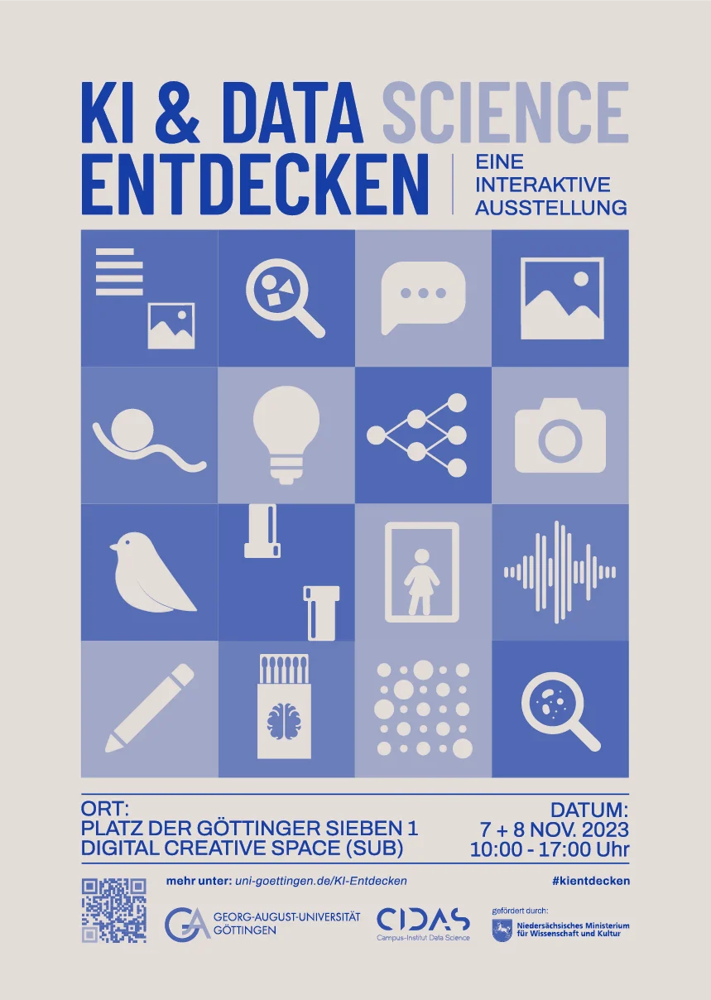
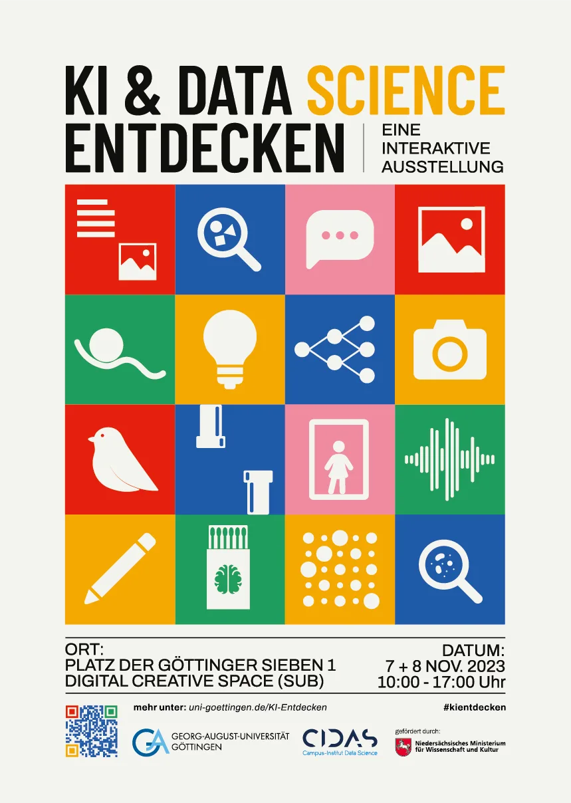
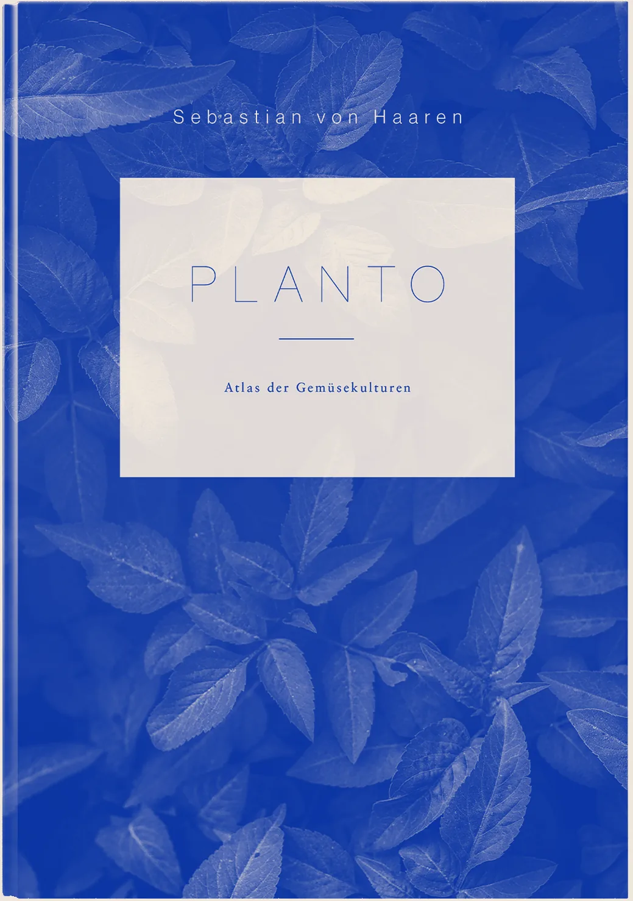
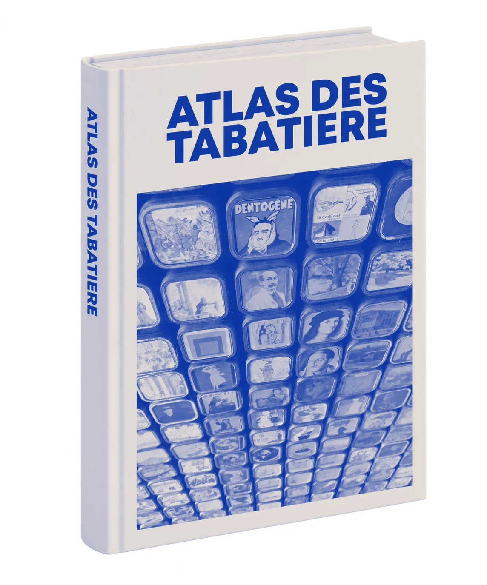
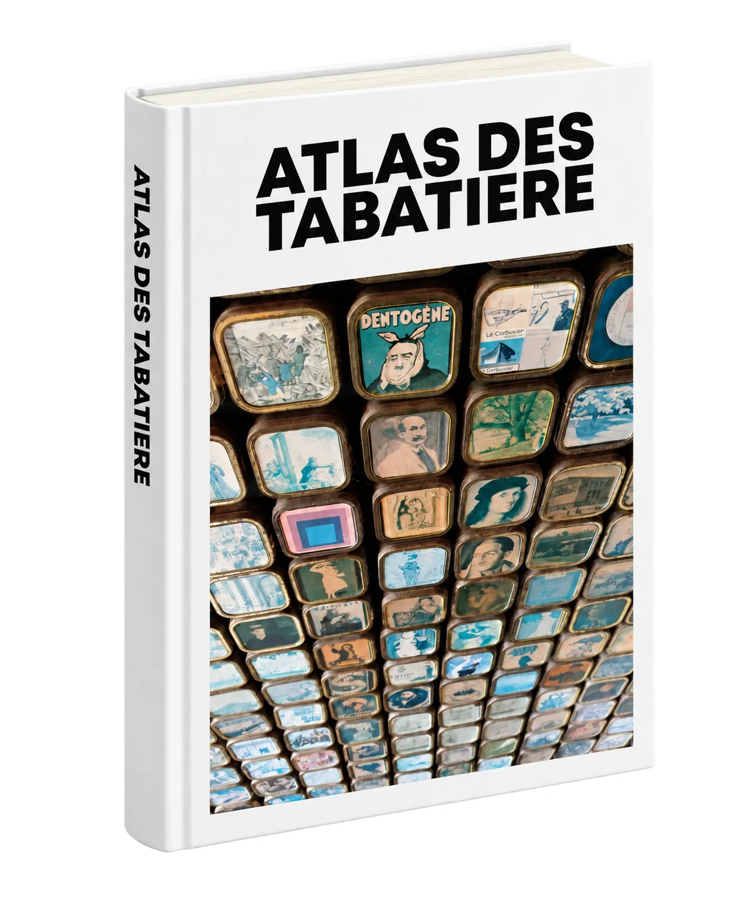
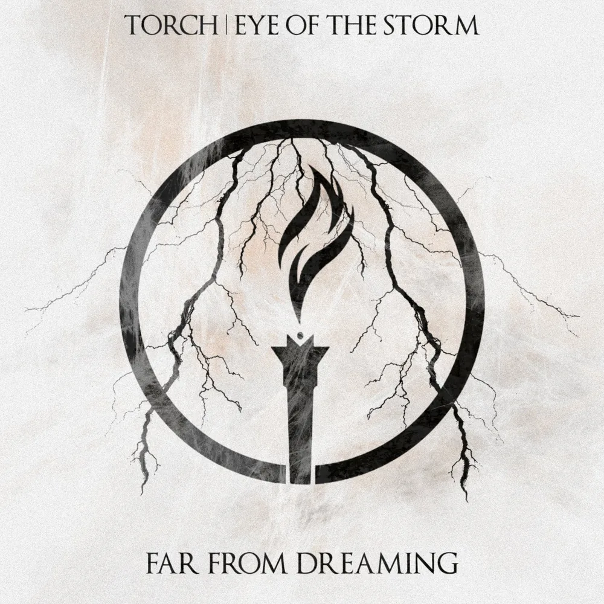

- sebastian.vonhaaren@gmail.com
- GöttingenGermany
Work
-
2025March issueon the cover
Cover illustration
Nature Methods · CIDAS
- Cell structures drawn soft, segmentation shown as colour.
- Made for “Segment Anything for Microscopy”.

-
2025and 2023
Single artwork
Miles of Hope · on Bandcamp ↗
- Two covers for a band I play in.

-
2023two days
Concept, identity, organisation
KI & Data Science Erleben · Uni Göttingen
- An exhibition on AI, conceived and largely organised.
- Every concept boiled down to one playful icon.


-
2023first book
Author, editorial design, typesetting
Planto · self-published
- A book I wrote, designed and fully typeset.
- For a winter morning and for planting season.


-
2021catalogue
Photography, research, editorial design
Atlas des Tabatiere
- A grandfather’s tobacco tins, read as a portrait.
- From the Surrealists to the Bauhaus, one lid at a time.


About
I came to design the long way round, and I still like taking it.
What drives me
Beginnings. I love the moment before anything exists, when I can think without limits and, for a while, believe that anything is possible. Starting things, building them up, going back to the very basics. And every project opens a window into a subject I didn't know yet, so I get to learn while I design.
Why I keep things simple
Loving beginnings has a flip side: I need firm structure, too. Boundaries in my thinking keep me on track. I have ADHD, and since childhood my head has been a constant flood of impressions, ideas and impulses. Living between the will to be free and the need for a frame is my daily challenge. Design is how I make order in it. So reduction isn't just an aesthetic choice for me, it is a necessity, and the clarity it gives me is the clarity I want to give the people who see my work.
How I got here
For a long time I followed the path that offered itself as the logical next step. I trained as an office administrator because, after commercial school, that simply seemed to be what you do. At some point I understood that a working life made of purely administrative tasks was keeping my thinking small, in a place with little room for ideas or change. So I changed instead, and became the first person in my entire family tree to go to university.
A completely new world opened up, one in which a thought may simply be inspiration and doesn’t have to lead straight to action. Finding my way in it, suddenly an actor and no longer only a reactor, was anything but easy. So I tried things out, and along the way I noticed that what puts my thoughts in order is minimalist aesthetics: understanding through representation. That is when this passion for design appeared.
Then I took a job in a data science environment, and it deals with the same thing my head deals with every day: far more information than anyone can take in at once. Data science looks for the patterns in it, and design decides how those patterns become visible and understandable to people. That space in between is where I work, and it is where projects like the Nature Methods cover or the exhibition on AI and data science come from.
How I think
Process is learning, and for me that reaches far beyond any project. I live hyper-flexibly: I allow myself to learn while I am in the middle of things, always starting from the assumption that I know that I know nothing (I love Socrates). Not knowing is the state in which I notice the most, so I see no reason to leave it before I begin. Every subject I step into opens a window onto something I did not know yet, and every conversation along the way is allowed to shift my view, sometimes by a few degrees, sometimes completely. I would rather change course late than defend a direction I no longer believe in.
That can feel uncomfortable for anyone who needs a clear picture of right and wrong, but whoever allows themselves to see right and wrong as a greyscale rainbow will find in me reflection as just-in-time production: questions asked in the moment they matter, and answers that stay open to the next question.
Sounds trivial to you? We might become friends!
Off the clock
Making music in two bands, taking photographs, learning pottery. Music, photography and illustration inform each other: an idea that starts in one medium often ends up somewhere else. I see design as a dialogue, not a closed system. My current rabbit holes are just below.
rabbit holes, right now
- Pottery
- Coffee
- Hiking
- Web design
- Interior design
- Getting rid of stuff
Music
-
2025Emo

On LossMiles of Hope
Daniel Müller, Dennis Thiele, Falk Nagel, Sebastian von HaarenArtwork by Sebastian von Haaren
-
2025Emo

EchoesMiles of Hopeon The Emo Diaries, Chapter 13 · Deep Elm Records
Daniel Müller, Dennis Thiele, Falk Nagel, Sebastian von Haaren
-
2023Emo

Shark BaitMiles of Hope
Daniel Müller, Dennis Thiele, Falk Nagel, Sebastian von HaarenArtwork by Sebastian von Haaren
-
2022Alternative metal

Torch | Eye Of The StormFar From Dreaming
Sascha, Tiemo, Lars, Daniel, Sebastian
-
2022Post-rock

SkyglowSkyglow
Wilke, Falk, Kilian, Alex
contact
path
- Public relations & knowledge managementCurrent role · data science research
- Graphic designSelf-taught
- Business AdministrationUniversity studies · focus on consumer behaviour
- Office administratorVocational training
skills
- Editorial design, typesetting
- Visual identity, illustration
- AI workflows
- Audio editing
- Adobe CC · HTML/CSS
- LanguagesGerman (native) · English (fluent) · Russian (basics)
on the side
- Two bandsMiles of Hope, emo · Skyglow, post-rock
- PotteryStill learning